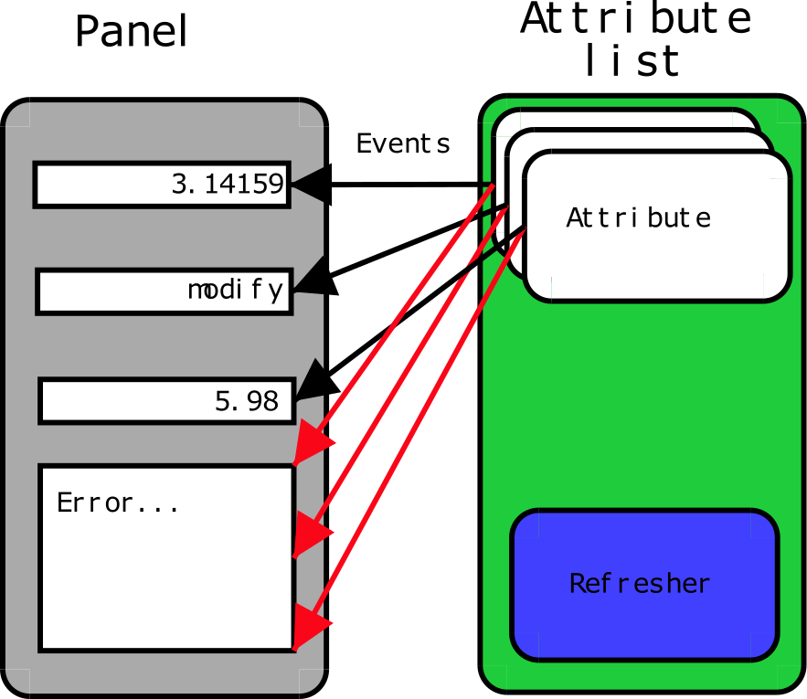

TangoATK Programmer’s Guide¶
This chapter is only a brief Tango ATK (Application ToolKit) programmer’s guide. You can find a reference guide with a full description of TangoATK classes and methods in the ATK JavaDoc (Tango ATK reference on-line documentation).
A tutorial document Tango ATK Tutorial is also provided and includes the detailed description of the ATK architecture and the ATK components. In the ATK Tutorial you can find some code examples and also Flash Demos which explain how to start using Tango ATK.
Introduction¶
This document describes how to develop applications using the Tango Application Toolkit, TangoATK for short. It will start with a brief description of the main concepts behind the toolkit, and then continue with more practical, real-life examples to explain key parts.
Assumptions¶
The author assumes that the reader has a good knowledge of the Java programming language, and a thorough understanding of object-oriented programming. Also, it is expected that the reader is fluent in all aspects regarding Tango devices, attributes, and commands.
The key concepts of TangoATK¶
TangoATK was developed with these goals in mind
- TangoATK should help minimize development time
- TangoATK should help minimize bugs in applications
- TangoATK should support applications that contain attributes and commands from several different devices.
- TangoATK should help avoid code duplication.
Since most Tango-applications were foreseen to be displayed on some sort of graphic terminal, TangoATK needed to provide support for some sort of graphic building blocks. To enable this, and since the toolkit was to be written in Java, we looked to Swing to figure out how to do this.
Swing is developed using a variant over a design-pattern the Model-View-Controller (MVC) pattern called model-delegate, where the view and the controller of the MVC-pattern are merged into one object.
This pattern made the choice of labor division quite easy: all non-graphic parts of TangoATK reside in the packages beneath fr.esrf.tangoatk.core, and anything remotely graphic are located beneath fr.esrf.tangoatk.widget. More on the content and organization of this will follow.
The communication between the non-graphic and graphic objects are done by having the graphic object registering itself as a listener to the non-graphic object, and the non-graphic object emmiting events telling the listeners that its state has changed.
Minimize development time¶
For TangoATK to help minimize the development time of graphic applications, the toolkit has been developed along two lines of thought
- Things that are needed in most applications are included, eg
Splash, a splash window which gives a graphical way for the application to show the progress of a long operation. The splash window is moslty used in the startup phase of the application. - Building blocks provided by TangoATK should be easy to use and follow
certain patterns, eg every graphic widget has a
setModelmethod which is used to connect the widget with its non-graphic model.
In addition to this, TangoATK provides a framework for error handling, something that is often a time consuming task.
Minimize bugs in applications¶
Together with the Tango API, TangoATK takes care of most of the hard things related to programming with Tango. Using TangoATK the developer can focus on developing her application, not on understanding Tango.
Attributes and commands from different devices¶
To be able to create applications with attributes and commands from different devices, it was decided that the central objects of TangoATK were not to be the device, but rather the attributes and the commands. This will certainly feel a bit awkward at first, but trust me, the design holds.
For this design to be feasible, a structure was needed to keep track of the commands and attributes, so the command-list and the attribute-list was introduced. These two objects can hold commands and attributes from any number of devices.
Avoid code duplication¶
When writing applications for a control-system without a framework much code is duplicated. Anything from simple widgets for showing numeric values to error handling has to be implemented each time. TangoATK supplies a number of frequently used widgets along with a framework for connecting these widgets with their non-graphic counterparts. Because of this, the developer only needs to write the glue - the code which connects these objects in a manner that suits the specified application.
The real getting started¶
Generally there are two kinds of end-user applications: Applications that only know how to treat one device, and applications that treat many devices.
Single device applications¶
Single device applications are quite easy to write, even with a gui. The following steps are required
- Instantiate an AttributeList and fill it with the attributes you want.
- Instantiate a CommandList and fill it with the commands you want.
- Connect the whole AttributeList with a list viewer and / or each individual attribute with an attribute viewer.
- Connect the whole CommandList to a command list viewer and / or connect each individual command in the command list with a command viewer.

The following program (FirstApplication) shows an implementation of the list mentioned above. It should be rather self-explanatory with the comments.
1 package examples; 2 3 4 import javax.swing.JFrame; 5 import javax.swing.JMenuItem; 6 import javax.swing.JMenuBar; 7 import javax.swing.JMenu; 8 9 10 import java.awt.event.ActionListener; 11 import java.awt.event.ActionEvent; 12 import java.awt.BorderLayout; 13 14 15 import fr.esrf.tangoatk.core.AttributeList; 16 import fr.esrf.tangoatk.core.ConnectionException; 17 18 19 import fr.esrf.tangoatk.core.CommandList; 20 import fr.esrf.tangoatk.widget.util.ErrorHistory; 21 import fr.esrf.tangoatk.widget.util.ATKGraphicsUtils; 22 import fr.esrf.tangoatk.widget.attribute.ScalarListViewer; 23 import fr.esrf.tangoatk.widget.command.CommandComboViewer; 24 25 26 public class FirstApplication extends JFrame 27 { 28 JMenuBar menu; // So that our application looks 29 // halfway decent. 30 AttributeList attributes; // The list that will contain our 31 // attributes 32 CommandList commands; // The list that will contain our 33 // commands 34 ErrorHistory errorHistory; // A window that displays errors 35 ScalarListViewer sListViewer; // A viewer which knows how to 36 // display a list of scalar attributes. 37 // If you want to display other types 38 // than scalars, you'll have to wait 39 // for the next example. 40 CommandComboViewer commandViewer; // A viewer which knows how to display 41 // a combobox of commands and execute 42 // them. 43 String device; // The name of our device. 44 45 46 public FirstApplication() 47 { 48 // The swing stuff to create the menu bar and its pulldown menus 49 menu = new JMenuBar(); 50 JMenu fileMenu = new JMenu(); 51 fileMenu.setText("File"); 52 JMenu viewMenu = new JMenu(); 53 viewMenu.setText("View"); 54 55 JMenuItem quitItem = new JMenuItem(); 56 quitItem.setText("Quit"); 57 quitItem.addActionListener(new 58 java.awt.event.ActionListener() 59 { 60 public void 61 actionPerformed(ActionEvent evt) 62 {quitItemActionPerformed(evt);} 63 }); 64 fileMenu.add(quitItem); 65 66 JMenuItem errorHistItem = new JMenuItem(); 67 errorHistItem.setText("Error History"); 68 errorHistItem.addActionListener(new 69 java.awt.event.ActionListener() 70 { 71 public void 72 actionPerformed(ActionEvent evt) 73 {errHistItemActionPerformed(evt);} 74 }); 75 viewMenu.add(errorHistItem); 76 menu.add(fileMenu); 77 menu.add(viewMenu); 78 79 // 80 // Here we create ATK objects to handle attributes, commands and errors. 81 // 82 attributes = new AttributeList(); 83 commands = new CommandList(); 84 errorHistory = new ErrorHistory(); 85 device = "id14/eh3_mirror/1"; 86 sListViewer = new ScalarListViewer(); 87 commandViewer = new CommandComboViewer(); 88 89 90 // 91 // A feature of the command and attribute list is that if you 92 // supply an errorlistener to these lists, they'll add that 93 // errorlistener to all subsequently created attributes or 94 // commands. So it is important to do this _before_ you 95 // start adding attributes or commands. 96 // 97 98 attributes.addErrorListener(errorHistory); 99 commands.addErrorListener(errorHistory); 100 101 // 102 // Sometimes we're out of luck and the device or the attributes 103 // are not available. In that case a ConnectionException is thrown. 104 // This is why we add the attributes in a try/catch 105 // 106 107 try 108 { 109 110 // 111 // Another feature of the attribute and command list is that they 112 // can add wildcard names, currently only `*' is supported. 113 // When using a wildcard, the lists will add all commands or 114 // attributes available on the device. 115 // 116 attributes.add(device + "/*"); 117 } 118 catch (ConnectionException ce) 119 { 120 System.out.println("Error fetching " + 121 "attributes from " + 122 device + " " + ce); 123 } 124 125 126 // 127 // See the comments for attributelist 128 // 129 130 131 try 132 { 133 commands.add(device + "/*"); 134 } 135 catch (ConnectionException ce) 136 { 137 System.out.println("Error fetching " + 138 "commands from " + 139 device + " " + ce); 140 } 141 142 143 // 144 // Here we tell the scalarViewer what it's to show. The 145 // ScalarListViewer loops through the attribute-list and picks out 146 // the ones which are scalars and show them. 147 // 148 149 sListViewer.setModel(attributes); 150 151 152 // 153 // This is where the CommandComboViewer is told what it's to 154 // show. It knows how to show and execute most commands. 155 // 156 157 158 commandViewer.setModel(commands); 159 160 161 // 162 // add the menubar to the frame 163 // 164 165 166 setJMenuBar(menu); 167 168 169 // 170 // Make the layout nice. 171 // 172 173 174 getContentPane().setLayout(new BorderLayout()); 175 getContentPane().add(commandViewer, BorderLayout.NORTH); 176 getContentPane().add(sListViewer, BorderLayout.SOUTH); 177 178 179 // 180 // A third feature of the attributelist is that it knows how 181 // to refresh its attributes. 182 // 183 184 185 attributes.startRefresher(); 186 187 188 // 189 // JFrame stuff to make the thing show. 190 // 191 192 193 pack(); 194 ATKGraphicsUtils.centerFrameOnScreen(this); //ATK utility to center window 195 196 setVisible(true); 197 } 198 199 200 public static void main(String [] args) 201 { 202 new FirstApplication(); 203 } 204 205 public void quitItemActionPerformed(ActionEvent evt) 206 { 207 System.exit(0); 208 } 209 210 public void errHistItemActionPerformed(ActionEvent evt) 211 { 212 errorHistory.setVisible(true); 213 } 214 }
The program should look something like this (depending on your platform and your device)

Multi device applications¶
1 try 2 { 3 // a StringScalar attribute from the device one 4 attributes.add("jlp/test/1/att_cinq"); 5 // a NumberSpectrum attribute from the device one 6 attributes.add("jlp/test/1/att_spectrum"); 7 // a NumberImage attribute from the device two 8 attributes.add("sr/d-ipc/id25-1n/Image"); 9 } 10 catch (ConnectionException ce) 11 { 12 System.out.println("Error fetching " + 13 "attributes" + ce); 14 }
The same goes for commands.
More on displaying attributes¶
So far, we’ve only considered scalar attributes, and not only that,
we’ve also cheated quite a bit since we just passed the attribute list
to the fr.esrf.tangoatk.widget.attribute.ScalarListViewer and let it
do all the magic. The attribute list viewers are only available for
scalar attributes (NumberScalarListViewer and ScalarListViewer). If you
have one or several spectrum or image attributes you must connect each
spectrum or image attribute to it’s corresponding attribute viewer
individually. So let’s take a look at how you can connect individual
attributes (and not a whole attribute list) to an individual attribute
viewer (and not to an attribute list viewer).
Connecting an attribute to a viewer¶
Generally it is done in the following way:
- You retrieve the attribute from the attribute list
- You instantiate the viewer
- Your call the
setModelmethod on the viewer with the attribute as argument. - You add your viewer to some panel
The following example (SecondApplication), is a Multi-device application. Since this application uses individual attribute viewers and not an attribute list viewer, it shows an implementation of the list mentioned above.
1 package examples; 2 3 4 import javax.swing.JFrame; 5 import javax.swing.JMenuItem; 6 import javax.swing.JMenuBar; 7 import javax.swing.JMenu; 8 9 10 import java.awt.event.ActionListener; 11 import java.awt.event.ActionEvent; 12 import java.awt.BorderLayout; 13 import java.awt.Color; 14 15 16 import fr.esrf.tangoatk.core.AttributeList; 17 import fr.esrf.tangoatk.core.ConnectionException; 18 19 import fr.esrf.tangoatk.core.IStringScalar; 20 import fr.esrf.tangoatk.core.INumberSpectrum; 21 import fr.esrf.tangoatk.core.INumberImage; 22 import fr.esrf.tangoatk.widget.util.ErrorHistory; 23 import fr.esrf.tangoatk.widget.util.Gradient; 24 import fr.esrf.tangoatk.widget.util.ATKGraphicsUtils; 25 import fr.esrf.tangoatk.widget.attribute.NumberImageViewer; 26 import fr.esrf.tangoatk.widget.attribute.NumberSpectrumViewer; 27 import fr.esrf.tangoatk.widget.attribute.SimpleScalarViewer; 28 29 public class SecondApplication extends JFrame 30 { 31 JMenuBar menu; 32 AttributeList attributes; // The list that will contain our attributes 33 ErrorHistory errorHistory; // A window that displays errors 34 IStringScalar ssAtt; 35 INumberSpectrum nsAtt; 36 INumberImage niAtt; 37 public SecondApplication() 38 { 39 // Swing stuff to create the menu bar and its pulldown menus 40 menu = new JMenuBar(); 41 JMenu fileMenu = new JMenu(); 42 fileMenu.setText("File"); 43 JMenu viewMenu = new JMenu(); 44 viewMenu.setText("View"); 45 JMenuItem quitItem = new JMenuItem(); 46 quitItem.setText("Quit"); 47 quitItem.addActionListener(new java.awt.event.ActionListener() 48 { 49 public void actionPerformed(ActionEvent evt) 50 {quitItemActionPerformed(evt);} 51 }); 52 53 fileMenu.add(quitItem); 54 JMenuItem errorHistItem = new JMenuItem(); 55 errorHistItem.setText("Error History"); 56 errorHistItem.addActionListener(new java.awt.event.ActionListener() 57 { 58 public void actionPerformed(ActionEvent evt) 59 {errHistItemActionPerformed(evt);} 60 }); 61 viewMenu.add(errorHistItem); 62 menu.add(fileMenu); 63 menu.add(viewMenu); 64 // 65 // Here we create TangoATK objects to view attributes and errors. 66 // 67 attributes = new AttributeList(); 68 errorHistory = new ErrorHistory(); 69 // 70 // We create a SimpleScalarViewer, a NumberSpectrumViewer and 71 // a NumberImageViewer, since we already knew that we were 72 // playing with a scalar attribute, a number spectrum attribute 73 // and a number image attribute this time. 74 // 75 SimpleScalarViewer ssViewer = new SimpleScalarViewer(); 76 NumberSpectrumViewer nSpectViewer = new NumberSpectrumViewer(); 77 NumberImageViewer nImageViewer = new NumberImageViewer(); 78 attributes.addErrorListener(errorHistory); 79 // 80 // The attribute (and command) list has the feature of returning the last 81 // attribute that was added to it. Just remember that it is returned as an 82 // IEntity object, so you need to cast it into a more specific object, like 83 // IStringScalar, which is the interface which defines a string scalar 84 // 85 try 86 { 87 88 ssAtt = (IStringScalar) attributes.add("jlp/test/1/att_cinq"); 89 nsAtt = (INumberSpectrum) attributes.add("jlp/test/1/att_spectrum"); 90 niAtt = (INumberImage) attributes.add("sr/d-ipc/id25-1n/Image"); 91 } 92 catch (ConnectionException ce) 93 { 94 System.out.println("Error fetching one of the attributes "+" " + ce); 95 System.out.println("Application Aborted."); 96 System.exit(0); 97 } 98 // 99 // Pay close attention to the following three lines!! This is how it's done! 100 // This is how it's always done! The setModelsetModel method of any viewer takes care 101 // of connecting the viewer to the attribute (model) it's in charge of displaying. 102 // This is the way to tell each viewer what (which attribute) it has to show. 103 // Note that we use a viewer adapted to each type of attribute 104 // 105 ssViewer.setModel(ssAtt); 106 nSpectViewer.setModel(nsAtt); 107 nImageViewer.setModel(niAtt); 108 // 109 nSpectViewer.setPreferredSize(new java.awt.Dimension(400, 300)); 110 nImageViewer.setPreferredSize(new java.awt.Dimension(500, 300)); 111 Gradient g = new Gradient(); 112 g.buidColorGradient(); 113 g.setColorAt(0,Color.black); 114 nImageViewer.setGradient(g); 115 nImageViewer.setBestFit(true); 116 117 // 118 // Add the viewers into the frame to show them 119 // 120 getContentPane().setLayout(new BorderLayout()); 121 getContentPane().add(ssViewer, BorderLayout.SOUTH); 122 getContentPane().add(nSpectViewer, BorderLayout.CENTER); 123 getContentPane().add(nImageViewer, BorderLayout.EAST); 124 // 125 // To have the attributes values refreshed we should start the 126 // attribute list's refresher. 127 // 128 attributes.startRefresher(); 129 // 130 // add the menubar to the frame 131 // 132 setJMenuBar(menu); 133 // 134 // JFrame stuff to make the thing show. 135 // 136 pack(); 137 ATKGraphicsUtils.centerFrameOnScreen(this); //ATK utility to center window 138 setVisible(true); 139 } 140 public static void main(String [] args) 141 { 142 new SecondApplication(); 143 } 144 public void quitItemActionPerformed(ActionEvent evt) 145 { 146 System.exit(0); 147 } 148 public void errHistItemActionPerformed(ActionEvent evt) 149 { 150 errorHistory.setVisible(true); 151 } 152 }
Synoptic viewer¶
TangoATK provides a generic class to view and to animate the synoptics. The name of this class is fr.esrf.tangoatk.widget.jdraw.SynopticFileViewer. This class is based on a “home-made” graphical layer called jdraw. The jdraw package is also included inside TangoATK distribution.
SynopticFileViewer is a sub-class of the class TangoSynopticHandler. All the work for connection to tango devices and run time animation is done inside the TangoSynopticHandler.
The recipe for using the TangoATK synoptic viewer is the following
- You use Jdraw graphical editor to draw your synoptic
- During drawing phase don’t forget to associate parts of the drawing to tango attributes or commands. Use the “name” in the property window to do this
- During drawing phase you can also aasociate a class (frequently a “specific panel” class) which will be displayed when the user clicks on some part of the drawing. Use the “extension” tab in the property window to do this.
- Test the run-time behaviour of your synoptic. Use “Tango Synoptic view” command in the “views” pulldown menu to do this.
- Save the drawing file.
- There is a simple synoptic application (SynopticAppli) which is provided ready to use. If this generic application is enough for you, you can forget about the step 7.
- You can now develop a specific TangoATK based application which instantiates the SynopticFileViewer. To load the synoptic file in the SynopticFileViewer you have the choice : either you load it by giving the absolute path name of the synoptic file or you load the synoptic file using Java input streams. The second solution is used when the synoptic file is included inside the application jarfile.
The SynopticFilerViewer will browse the objects in the synoptic file at run time. It discovers if some parts of the drawing is associated with an attribute or a command. In this case it will automatically connect to the corresponding attribute or command. Once the connection is successful SynopticFileViewer will animate the synoptic according to the default behaviour described below :
- For tango state attributes : the colour of the drawing object reflects the value of the state. A mouse click on the drawing object associated with the tango state attribute will instantiate and display the class specified during the drawing phase. If no class is specified the atkpanel generic device panel is displayed.
- For tango attributes : the current value of the attribute is displayed through the drawing object
- For tango commands : the mouse click on the drawing object associated with the command will launch the device command.
- If the tooltip property is set to “name” when the mouse enters any tango object ( attribute or command), inside the synoptic drawing the name of the tango object is displayed in a tooltip.
The following example (ThirdApplication), is a Synoptic application. We assume that the synoptic has already been drawn using Jdraw graphical editor.
1 package examples; 2 import java.io.*; 3 import java.util.*; 4 import javax.swing.JFrame; 5 import javax.swing.JMenuItem; 6 import javax.swing.JMenuBar; 7 import javax.swing.JMenu; 8 import java.awt.event.ActionListener; 9 import java.awt.event.ActionEvent; 10 import java.awt.BorderLayout; 11 import fr.esrf.tangoatk.widget.util.ErrorHistory; 12 import fr.esrf.tangoatk.widget.util.ATKGraphicsUtils; 13 import fr.esrf.tangoatk.widget.jdraw.SynopticFileViewer; 14 import fr.esrf.tangoatk.widget.jdraw.TangoSynopticHandler; 15 public class ThirdApplication extends JFrame 16 { 17 JMenuBar menu; 18 ErrorHistory errorHistory; // A window that displays errors 19 SynopticFileViewer sfv; // TangoATK generic synoptic viewer 20 21 22 public ThirdApplication() 23 { 24 // Swing stuff to create the menu bar and its pulldown menus 25 menu = new JMenuBar(); 26 JMenu fileMenu = new JMenu(); 27 fileMenu.setText("File"); 28 JMenu viewMenu = new JMenu(); 29 viewMenu.setText("View"); 30 JMenuItem quitItem = new JMenuItem(); 31 quitItem.setText("Quit"); 32 quitItem.addActionListener(new java.awt.event.ActionListener() 33 { 34 public void actionPerformed(ActionEvent evt) 35 {quitItemActionPerformed(evt);} 36 }); 37 fileMenu.add(quitItem); 38 JMenuItem errorHistItem = new JMenuItem(); 39 errorHistItem.setText("Error History"); 40 errorHistItem.addActionListener(new java.awt.event.ActionListener() 41 { 42 public void actionPerformed(ActionEvent evt) 43 {errHistItemActionPerformed(evt);} 44 }); 45 viewMenu.add(errorHistItem); 46 menu.add(fileMenu); 47 menu.add(viewMenu); 48 // 49 // Here we create TangoATK synoptic viewer and error window. 50 // 51 errorHistory = new ErrorHistory(); 52 sfv = new SynopticFileViewer(); 53 try 54 { 55 sfv.setErrorWindow(errorHistory); 56 } 57 catch (Exception setErrwExcept) 58 { 59 System.out.println("Cannot set Error History Window"); 60 } 61 62 // 63 // Here we define the name of the synoptic file to show and the tooltip mode to use 64 // 65 try 66 { 67 sfv.setJdrawFileName("/users/poncet/ATK_OLD/jdraw_files/id14.jdw"); 68 sfv.setToolTipMode (TangoSynopticHandler.TOOL_TIP_NAME); 69 } 70 catch (FileNotFoundException fnfEx) 71 { 72 javax.swing.JOptionPane.showMessageDialog( 73 null, "Cannot find the synoptic file : id14.jdw.\n" 74 + "Check the file name you entered;" 75 + " Application will abort ...\n" 76 + fnfEx, 77 "No such file", 78 javax.swing.JOptionPane.ERROR_MESSAGE); 79 System.exit(-1); 80 } 81 catch (IllegalArgumentException illEx) 82 { 83 javax.swing.JOptionPane.showMessageDialog( 84 null, "Cannot parse the synoptic file : id14.jdw.\n" 85 + "Check if the file is a Jdraw file." 86 + " Application will abort ...\n" 87 + illEx, 88 "Cannot parse the file", 89 javax.swing.JOptionPane.ERROR_MESSAGE); 90 System.exit(-1); 91 } 92 catch (MissingResourceException mrEx) 93 { 94 javax.swing.JOptionPane.showMessageDialog( 95 null, "Cannot parse the synoptic file : id14.jdw.\n" 96 + " Application will abort ...\n" 97 + mrEx, 98 "Cannot parse the file", 99 javax.swing.JOptionPane.ERROR_MESSAGE); 100 System.exit(-1); 101 } 102 // 103 // Add the viewers into the frame to show them 104 // 105 getContentPane().setLayout(new BorderLayout()); 106 getContentPane().add(sfv, BorderLayout.CENTER); 107 // 108 // add the menubar to the frame 109 // 110 setJMenuBar(menu); 111 // 112 // JFrame stuff to make the thing show. 113 // 114 pack(); 115 ATKGraphicsUtils.centerFrameOnScreen(this); //TangoATK utility to center window 116 setVisible(true); 117 } 118 public static void main(String [] args) 119 { 120 new ThirdApplication(); 121 } 122 public void quitItemActionPerformed(ActionEvent evt) 123 { 124 System.exit(0); 125 } 126 public void errHistItemActionPerformed(ActionEvent evt) 127 { 128 errorHistory.setVisible(true); 129 } 130 }

A short note on the relationship between models and viewers¶
As seen in the examples above, the connection between a model and its
viewer is generally done by calling setModel(model) on the viewer,
it is never explained what happens behind the scenes when this is done.
Listeners¶
Most of the viewers implement some sort of listener interface, eg INumberScalarListener. An object implementing such a listener interface has the capability of receiving and treating events from a model which emits events.
1 // this is the setModel of a SimpleScalarViewer 2 public void setModelsetModel(INumberScalar scalar) { 3 4 clearModel(); 5 6 if (scalar != null) { 7 format = scalar.getProperty("format").getPresentation(); 8 numberModel = scalar; 9 10 // this is where the viewer connects itself to the 11 // model. After this the viewer will (hopefully) receive 12 // events through its numberScalarChange() method 13 14 numberModel.addNumberScalarListener(this); 15 16 17 numberModel.getProperty("format").addPresentationListener(this); 18 numberModel.getProperty("unit").addPresentationListener(this); 19 } 20 21 } 22 23 24 25 // Each time the model of this viewer (the numberscalar attribute) decides it is time, it 26 // calls the numberScalarChange method of all its registered listeners 27 // with a NumberScalarEvent object which contains the 28 // the new value of the numberscalar attribute. 29 // 30 31 public void numberScalarChange(NumberScalarEvent evt) { 32 String val; 33 val = getDisplayString(evt); 34 if (unitVisible) { 35 setText(val + " " + numberModel.getUnit()); 36 } else { 37 setText(val); 38 } 39 }
All listeners in TangoATK implement the IErrorListener interface
which specifies the errorChange(ErrorEvent e) method. This means
that all listeners are forced to handle errors in some way or another.
The key objects of TangoATK¶
As seen from the examples above, the key objects of TangoATK are the
CommandList and the AttributeList. These two classes inherit
from the abstract class AEntityList which implements all of the
common functionality between the two lists. These lists use the
functionality of the CommandFactory, the AttributeFactory, which
both derive from AEntityFactory, and the DeviceFactory.
In addition to these factories and lists there is one (for the time being) other important functionality lurking around, the refreshers.
The Refreshers¶
The refreshers, represented in TangoATK by the Refresher object, is
simply a subclass of java.lang.Thread which will sleep for a given
amount of time and then call a method refresh on whatever kind of
IRefreshee it has been given as parameter, as shown below
1 // This is an example from DeviceFactory. 2 // We create a new Refresher with the name "device" 3 // We add ourself to it, and start the thread 4 5 6 Refresher refresher = new Refresher("device"); 7 refresher.addRefreshee(this).start();
Both the AttributeList and the DeviceFactory implement the
IRefreshee interface which specify only one method, refresh(),
and can thus be refreshed by the Refresher. Even if the new release
of TangoATK is based on the Tango Events, the refresher mecanisme will
not be removed. As a matter of fact, the method refresh() implemented in
AttributeList skips all attributes (members of the list) for which the
subscribe to the tango event has succeeded and calls the old refresh()
method for the others (for which subscribe to tango events has failed).
In a first stage this will allow the TangoATK applications to mix the use of the old tango device servers (which do not implement tango events) and the new ones in the same code. In other words, TangoATK subscribes for tango events if possible otherwise TangoATK will refresh the attributes through the old refresher mecanisme.
Another reason for keeping the refresher is that the subscribe event can fail even for the attributes of the new Tango device servers. As soon as the specified attribute is not polled the Tango events cannot be generated for that attribute. Therefore the event subscription will fail. In this case the attribute will be refreshed thanks to the ATK attribute list refresher.
The AttributePolledList class allows the application programmer to
force explicitly the use of the refresher method for all attributes
added in an AttributePolledList even if the corresponding device servers
implement tango events. Some viewers
(fr.esrf.tangoatk.widget.attribute.Trend) need an AttributePolledList in
order to force the refresh of the attribute without using tango events.
What happens on a refresh¶
When refresh is called on the AttributeList and the
DeviceFactory, they loop through their objects, IAttributes and
IDevices, respectively, and ask them to refresh themselves if they
are not event driven.
When AttributeFactory, creates an IAttribute, TangoATK tries to
subscribe for Tango Change event for that attribute. If the subscription
succeeds then the attribute is marked as event driven. If the
subscription for Tango Change event fails, TangoATK tries to subscribe
for Tango Periodic event. If the subscription succeeds then the
attribute is marked as event driven. If the subscription fails then the
attribute is marked as to be “ without events”.
In the refresh() method of the AttributeList during the loop through the objects if the object is marked event driven then the object is simply skipped. But if the object (attribute) is not marked as event driven, the refresh() method of the AttributeList, asks the object to refresh itself by calling the “refresh()” method of that object (attribute or device). The refresh() method of an attribute will in turn call the “readAttribute” on the Tango device.
The result of this is that the IAttributes fire off events to their
registered listeners containing snapshots of their state. The events are
fired either because the IAttribute has received a Tango Change event,
respectively a Tango Periodic event (event driven objects), or because
the refresh() method of the object has issued a readAttribute on the
Tango device.
The DeviceFactory¶
The device factory is responsible for two things
- Creating new devices (Tango device proxies) when needed
- Refreshing the state and status of these devices
Regarding the first point, new devices are created when they are asked for and only if they have not already been created. If a programmer asks for the same device twice, she is returned a reference to the same device-object.
The DeviceFactory contains a Refresher as described above, which
makes sure that the all in the updates their state and status and fire
events to its listeners.
The AttributeFactory and the CommandFactory¶
These factories are responsible for taking a name of an attribute or
command and returning an object representing the attribute or command.
It is also responsible for making sure that the appropriate IDevice
is already available. Normally the programmer does not want to use these
factory classes directly. They are used by TangoATK classes indirectly
when the application programmer calls the AttributeList’s (or
CommandList’s) add() method.
The AttributeList and the CommandList¶
These lists are containers for attributes and commands. They delegate the construction-work to the factories mentioned above, and generally do not do much more, apart from containing refreshers, and thus being able to make the objects they contain refresh their listeners.
The Attributes¶
The attributes come in several flavors. Tango supports the following types:
- Short
- Long
- Double
- String
- Unsigned Char
- Boolean
- Unsigned Short
- Float
- Unsigned Long
According to Tango specifications, all these types can be of the following formats:
- Scalar, a single value
- Spectrum, a single array
- Image, a two dimensional array
For the sake of simplicity, TangoATK has combined all the numeric types into one, presenting all of them as doubles. So the TangoATK classes which handle the numeric attributes are : NumberScalar, NumberSpectrum and NumberImage (Number can be short, long, double, float, …).
The hierarchy¶
The numeric attribute hierarchy is expressed in the following interfaces:
INumberScalar extends INumber
INumberSpectrum extends INumber
INumberImage extends INumber
INumber in turn extends IAttribute
Each of these types emit their proper events and have their proper listeners. Please consult the javadoc for further information.
The Commands¶
The commands in Tango are rather ugly beasts. There exists the following kinds of commands
- Those which take input
- Those which do not take input
- Those which do output
- Those which do not do output
Now, for both input and output we have the following types:
- Double
- Float
- Unsigned Long
- Long
- Unsigned Short
- Short
- String
These types can appear in scalar or array formats. In addition to this, there are also four other types of parameters:
- Boolean
- Unsigned Char Array
- The StringLongArray
- The StringDoubleArray
The last two types mentioned above are two-dimensional arrays containing a string array in the first dimension and a long or double array in the second dimension, respectively.
As for the attributes, all numeric types have been converted into doubles, but there has been made little or no effort to create an hierarchy of types for the commands.
Events and listeners¶
The commands publish results to their IResultListeners, by the
means of a ResultEvent. The IResultListener extends
IErrorListener, any viewer of command-results should also know how
to handle errors. So a viewer of command-results implements
IResultListener interface and registers itself as a resultListener for
the command it has to show the results.